In this assignment you will implement simplified versions of several
core motion-planning algorithms. The robot is a planar rectangle that
translates and rotates in a 2D workspace with polygonal obstacles. You
will implement configuration-space collision checking, a Dubins-car
style AbstractState, kinodynamic RRT, one-shot PRM, and a
PRM-based heuristic for the Dubins-car. As in MP1 and MP2, a large part
of the assignment is understanding the provided code and how the
different components interact.
To get started, look inside the template/ directory. The
template contains:
cspace.py. You will edit and submit this. It defines
configuration-space helpers and the rectangular robot collision
checkerrobot.py. You will edit and submit this. It defines the
unicycle dynamics and DubinsCarStaterrt.py. You will edit and submit this. It defines
kinodynamic RRTprm.py. You will edit and submit this. It defines
one-shot PRM and a PRM-based heuristicsearch.py. You will edit locally but not submit. Copy
your MP1/MP2 best_first_search and backtrack
herestate.py. You will edit locally but not submit. Copy
your MP1/MP2 AbstractState.__lt__ implementation heremain.py. Local entrypoint for running planners and
visualizationsrequirements.txt. Install dependencies from inside
template/ with
pip install -r requirements.txt. The main new package is
shapely for polygonal collision checkingdata/. JSON files containing workspace and robot
parametersPlease ONLY submit cspace.py, robot.py,
rrt.py, and prm.py.
This is the first assignment where we will start to use NumPy
heavily. When working with batches of points, prefer array operations
over loops. In particular, point_in_boundary and
sample_n_configs_in_boundary must operate on complete
arrays rather than looping or using comprehensions.
For all random choices in this assignment, use NumPy’s module-level
np.random functions. The provided --seed
option seeds this generator so that RRT and PRM runs are
reproducible.
There are 5 TODO(III) blocks in
cspace.py.
You will implement a 3D configuration space for a rectangular robot in a 2D workspace:
point_in_boundary(x, boundary): check whether an
arbitrary-dimensional point is inside an arbitrary-dimensional boundary.
The boundary has shape (n, 2), and points exactly on the
boundary count as inside
np.all to
check all dimensions at oncesample_n_configs_in_boundary: sample uniformly within
the CSpace boundary
forward_kinematics: compute the four rectangle corners
from (x, y, theta)
theta counterclockwise(x, y)is_valid: check CSpace boundary, workspace boundary,
and obstacle collisions
shapely library, you may need to
read through some documentationforward_kinematics)straight_line_local_planner: interpolate between
configurations for edge checking, returning a list of intermediate
configurations
self.interpolation_deltais_valid_edge checks only these intermediate
configurations. Its callers are responsible for ensuring the start and
end configurations themselves are validself.interpolation_delta, return an empty
list or empty arraytheta=0.1 to theta=2*pi-0.1 goes through
0, not all the way around the circle. This has many
implications for distance computation, and thus interpolation and
nearest-neighbor queries. Moreover whenever you find yourself computing
new angles from old ones (e.g.,
theta_new = theta_old + delta_theta), you should wrap the
result to [0, 2*pi) using the modulo operation
theta % (2 * np.pi)cspace.point_to_point_direction(...)
and cspace.point_to_point_distance(...) functions when
interpolating or comparing configurations with angular dimensions to
ensure proper distance calculations, but in some places you will need to
implement custom logicRun local CSpace sanity checks:
python3 cspace.pyThe file currently uses data/clutter.json. You can edit
that path in the if __name__ == "__main__" block. These
local checks are not exhaustive so you should definitely consider adding
more checks there as you debug (e.g., your interpolation logic).
There are 2 TODO(IV) blocks, one in
search.py and one in state.py.
Copy over your best_first_search,
backtrack, and AbstractState.__lt__
implementations from MP1/MP2 in preparation for the next part. Note that
this is purely for your own testing, the autograder uses its own staff
copy of search/state and you will not submit these files.
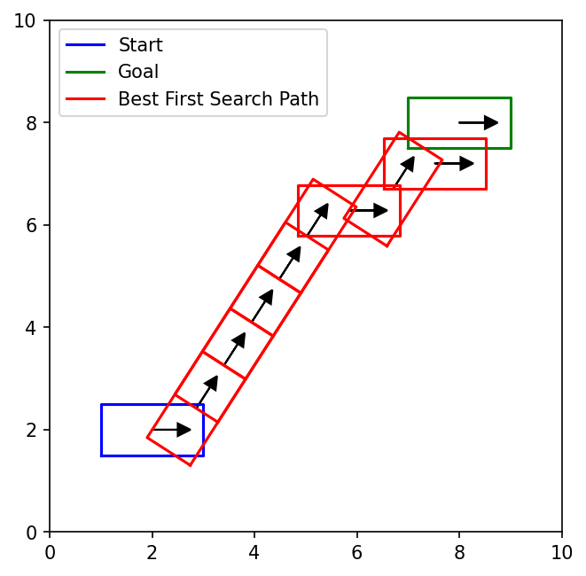
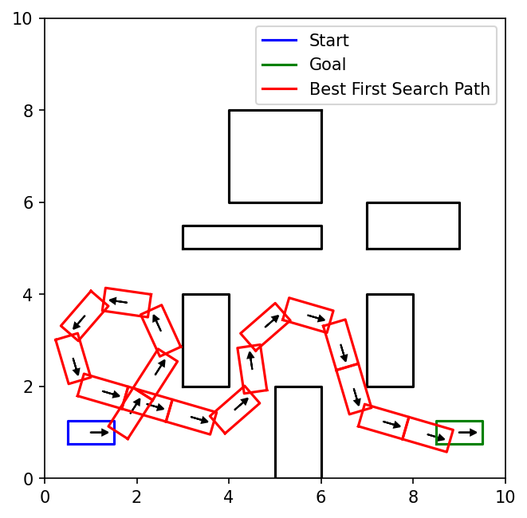
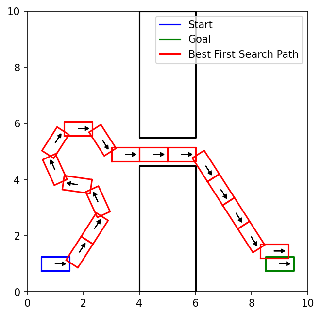
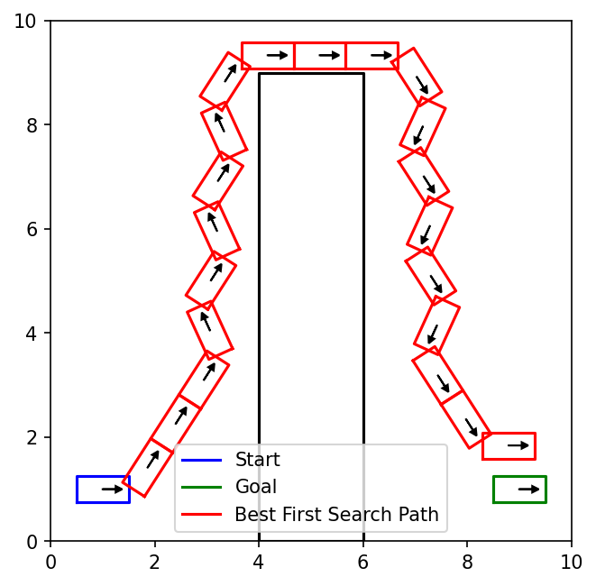
There are 4 TODO(V) blocks in robot.py.
You will implement:
UnicycleRobot.dynamics: apply one control for a time
step
(x, y, theta)(velocity, turn_rate)dt: \[ x_{next} = x +
\dot{x} \cdot dt \] \[ y_{next} = y +
\dot{y} \cdot dt \] \[ \theta_{next} =
\theta + \dot{\theta} \cdot dt \]theta, wrap it back into
[0, 2*pi) using theta % (2 * np.pi)!Robot.apply_constant_control: repeatedly apply a
control and return all intermediate configurations
self.dynamics to compute the next configuration at
each time stepself.interpolation_delta, and you
should apply the control for a total of t timet is not divisible by
self.interpolation_delta, the final time step will be
shorter so that the simulation ends exactly at time tt is divisible by
self.interpolation_delta, be careful about adding an extra
near-zero time step because of floating-point roundoffDubinsCarState.get_neighbors: generate left, straight,
and right Dubins-car neighbors while rejecting actions that lead to
invalid intermediate configurations
goal, use_heuristic, car_params,
and heuristic_func. Increase dist_from_start
by control_duration * velocityDubinsCarState.is_goal: check whether the current
configuration is within or exactly on the goal tolerance using
cspace.point_to_point_distanceRun best-first search with the default Euclidean heuristic:
python3 main.py --search_type=best_first_search --params_file=data/open.jsonYou can replace data/open.json with
data/clutter.json, data/narrow_passage.json,
or data/harder_passage.json. To save the visualization
instead of opening a window, add
--save_image=best_first_search_open_result.png --no_show.
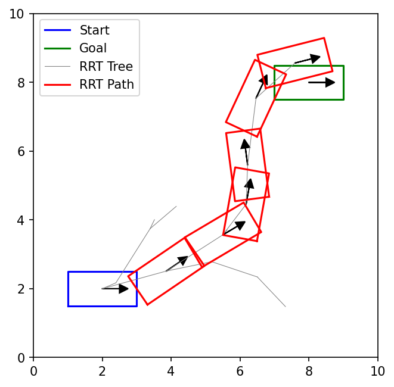
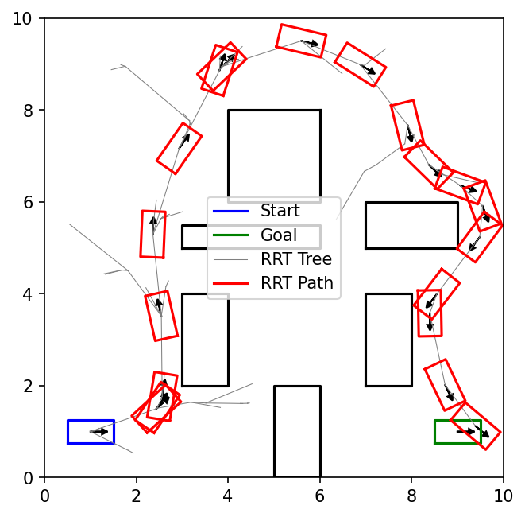
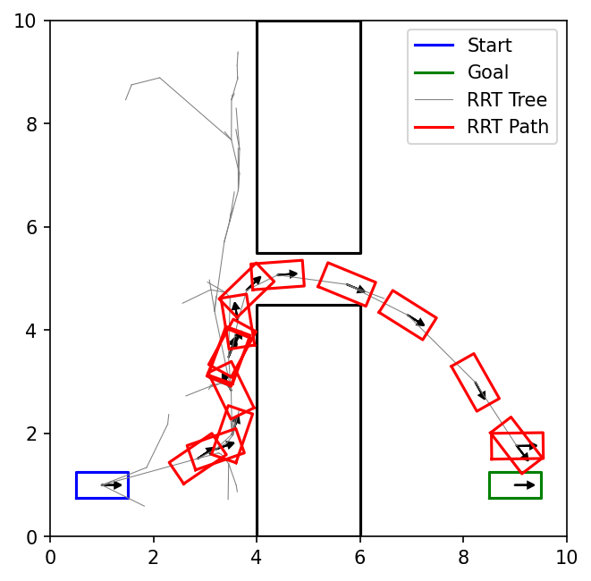
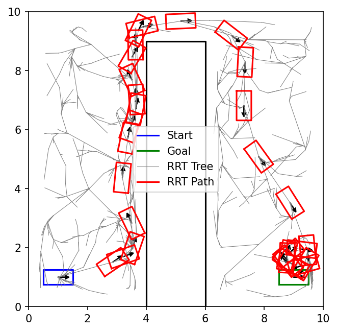
We now move on from best-first search to kinodynamic RRT. We provide
you with a basic high level algorithm for a guided tree search, namely
one which iteratively calls select_node and
expand_node methods to build the tree. We represent the
tree as a list of numpy configs along with with a dictionary that maps
indices in this array to their parents (and saving the action that was
taken from the parent). We then instantiate a child of this class called
KinodynamicRRT which specifically implements these two
methods using random sampling and extension towards the random sample.
Your job is to implement the select_node and
expand_node methods in rrt.py.
For select_node, choose the goal with probability
goal_sample_prob; otherwise call
cspace.sample_n_configs_in_boundary(1) once. Then
select the tree node nearest to that sample. For
expand_node, call
robot.sample_random_controls(num_control_samples) once,
simulate each returned control from the selected node, reject invalid
trajectories, and return the valid endpoint closest to the sampled
configuration. Do not draw replacement configurations or controls
after validation. Whenever doing nearest neighbor computations you
should use the provided cspace.point_to_point_distance(...)
function to ensure proper distance calculations for angular dimensions.
Notice that the generic expand_node method in
GuidedTreeSearch is expected to return a list of
possible new nodes but our implementation will return at most a single
expansion, so you will need to wrap the single new node in a list, i.e.,
your return type should look like
[(new_config, control_from_parent)].
Run RRT:
python3 main.py --search_type=rrt --params_file=data/open.json --max_iterations=3000 --num_neighbors=10 --rrt_control_duration=1.0 --rrt_goal_sample_prob=0.1You can replace the data file or tune the RRT parameters. Add
--seed=0 for a reproducible local run.
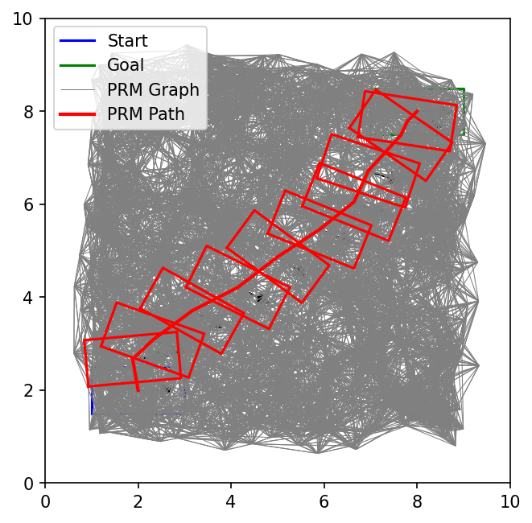
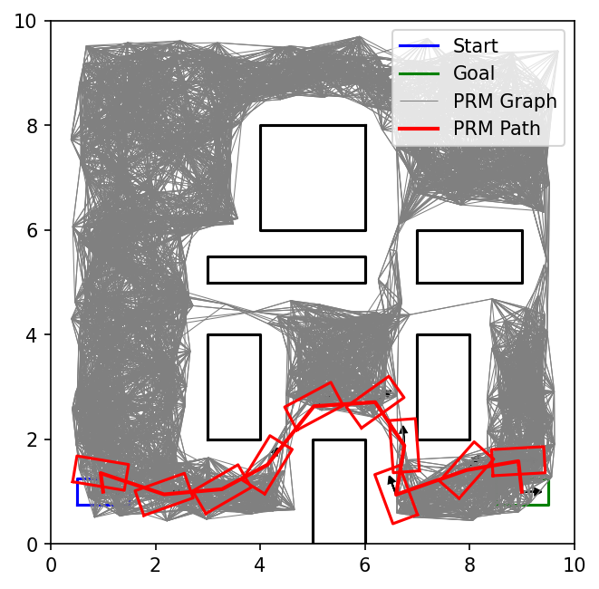
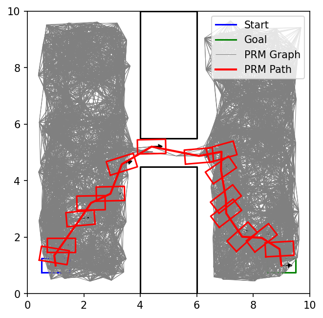
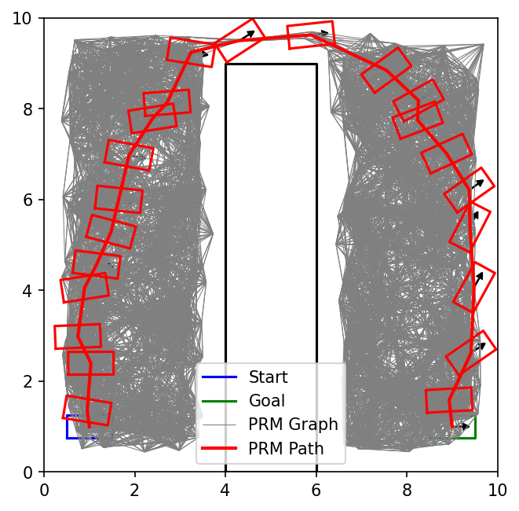
There is 1 TODO(VII) in prm.py.
OneShotPRM.__init__ should:
num_samples candidate configurations in
one batch
self.vertices
num_samplesmin(num_neighbors, len(self.vertices) - 1) other vertices
as its candidate neighbors
cspace.point_to_point_distance(...) for
nearest neighbor computations to ensure proper distance calculations for
angular dimensionsself.edgesThe sample and candidate sets above are fixed before validation.
Keeping replacements until you get num_samples valid
vertices, or checking farther neighbors until you find
num_neighbors valid edges, changes the required algorithm
and breaks the local efficiency that PRM is built on. For example, a
vertex surrounded by obstacles could otherwise require checking every
other vertex in the graph.
You may also be tempted to add a reverse edge whenever you
validate the edge from vertex A to vertex B. This also creates a subtle
bug - our edge validator is not symmetric! Interpolating in
increments of self.interpolation_delta from A to B is not
the same as interpolating from B to A, and one direction may return
valid while the other is not, even if in continuous space these are
symmetric. In a different implementation you might ensure your edge
validator is symmetric (say by checking both directions or ensuring
symmetric interpolation), but for this assignment our PRM is a directed
non-symmetric graph.
Example graph format:
# stores the vertices as configurations in a numpy array of shape (num_valid_vertices, 3)
self.vertices = np.array([
[1.0, 1.0, 0.0],
[2.0, 1.0, 0.2],
[4.0, 2.0, 6.1],
])
# stores outgoing edges from each vertex as index, cost/distance
self.edges = {
0: [(1, 1.02), (2, 3.15)],
1: [(0, 1.02)],
2: [], # note that 0 might not show up as a neighbor of 2 even though 2 is a neighbor of 0
}Run PRM:
python3 main.py --search_type=prm --params_file=data/open.json --max_iterations=2000 --num_neighbors=20As usual, you can replace the data file or tune the PRM parameters.
Add --seed=0 for a reproducible local run.
There is 1 TODO(VIII) in prm.py.
The PRM path is not dynamically feasible for the Dubins car, but it
can still give useful geometric guidance. You will now build a PRM for a
2D point-robot projection of the original CSpace, then use the returned
PRM path length as a heuristic for DubinsCarState.
Specifically, create a PolygonalCSpace whose
configurations are just 2-dimensional (x, y), using the
same workspace boundary and obstacles as the original CSpace. Remember
that points on an obstacle boundary count as colliding. The
cspace_boundary should be the same as the
workspace_boundary and the projection should use the center
of the rectangle as the 2D configuration (i.e.,
config[:2]). Its forward_kinematics should
return one workspace point, represented as [config[:2]] or
an array of shape (1, 2). Then create a
OneShotPRM on that 2D CSpace. The returned heuristic
function should query that PRM using the projection of the config and
projection of the goal (i.e., config[:2] and
goal_config[:2]). If the PRM query fails, fall back to the
original CSpace straight-line distance.
To make the above work you may want to create a new child of the
PolygonalCSpace class to work for such point robots or even
modify the original implementation to be more general…
Run best-first search with the PRM heuristic:
python3 main.py --search_type=best_first_search --heuristic_type=PRM2D --params_file=data/harder_passage.json --max_iterations=1000 --num_neighbors=20The PRM heuristic is intended to provide more useful guidance than
straight-line distance, especially on harder_passage,
though wall-clock time may not improve because building and querying the
roadmap has overhead. As usual, you can replace the data file or tune
the PRM parameters. Add --seed=0 for a reproducible local
run.
Submit the main part of this assignment by uploading
cspace.py, robot.py, rrt.py, and
prm.py to Gradescope. Do not forget to access Gradescope
from the Launch App button in Coursera so that your grade is
automatically sync’d.
Before submitting, make sure to comment out any print statements you added for debugging, since extra output can slow down your code on the autograder.
You are expected to be familiar with the general policies on the course syllabus, including academic integrity. In particular, this is an individual assignment and you may not use external sources to write significant parts of your code for you.